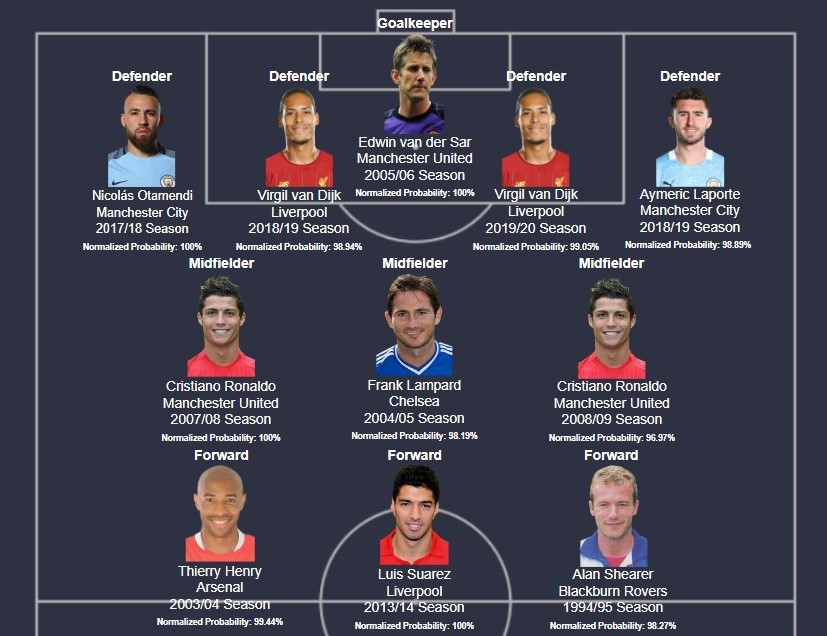
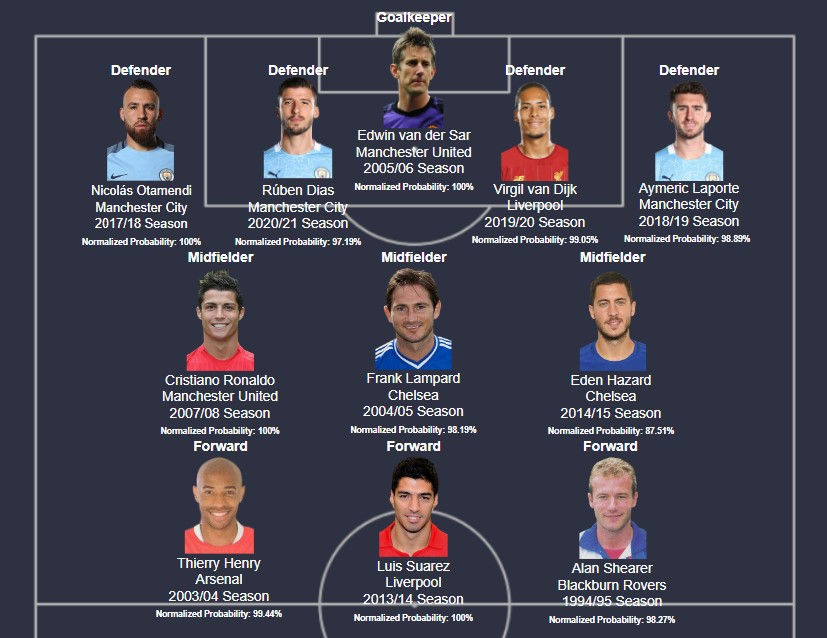

A compilation of an all-time XI based on best individual seasons in the PL as chosen by the models.
Under this section, all-time XIs would be showcased. Here, players who received the best possible probabilities of being included in the PFA TOTY over the years would be displayed in the form of an all-time PL XI.
Here, the 4-3-3 formation, which has been used in the PFA TOTY of the last 4 seasons, was utilized to select players who had been assigned the best possible probabilities of being included in the PFA TOTY by position throughout the time period considered in the research.
Note: The normalized probability mentioned here refers to the probability of inclusion of the respective player normalized with the maximum probability of inclusion provided by the models to a player with the same playing position.
Under this sub-section, the same player could be included more than once if said player has obtained out of the top probabilities applicable to his position more than once (i.e. in different seasons).
Accordingly, the team chosen by the models was as follows:

Accordingly, in this team, two players were observed to be included more than once: Virgil van Dijk of Liverpool and Cristiano Ronaldo of Manchester United. Notably, both of these players made the list in consecutive seasons, showcasing the impact of form in football.
Another noteworthy factor is that 10 of the 11 players chosen in the team each represented either one of the traditional ‘Big Six’ in English football; the sole exception here was Alan Shearer, who played for Blackburn Rovers.
Under this sub-section, one player is includable only once. This meant that if said player had obtained out of the top probabilities applicable to his position more than once, he would only be included once in the list, the occurrence with the highest probability considered.
Accordingly, the team chosen by the models was as follows:

A noteworthy factor is that, here too, 10 of the 11 players chosen in the team each represented either one of the ‘Big Six’ in English football; the sole exception here as well being Alan Shearer, who played for Blackburn Rovers.
Another factor observable was that every single one of the players selected in this list played for one of either the team that finished first or second in the PL during that respective season, showcasing the importance of said variable in this context.